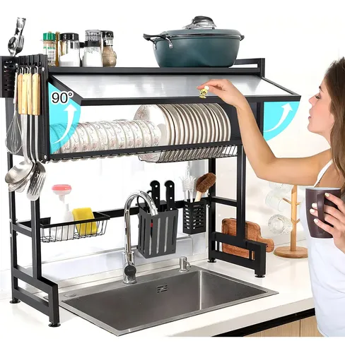

El hervidor eléctrico de cuello de cisne: ¿Es solo estética hipster?

Vas a una cafetería de especialidad y ves al barista vertiendo agua lentamente de una jarra negra con un tubo largo y curvo sobre un filtro de café. Se ve muy elegante, como un ritual alquímico. Pero, ¿realmente necesitas esa misma jarra en tu casa solo para prepararte un café matutino o un té verde?
Pusimos a prueba un hervidor eléctrico de cuello de cisne (gooseneck) para comparar su rendimiento frente a hervir agua en una olla normal en la estufa o en un hervidor de boca ancha clásico. Las conclusiones son bastante claras dependiendo de lo que te guste beber.
El secreto del tubo curvo: Control absoluto
El diseño del "cuello de cisne" no es por moda. Si alguna vez has intentado preparar un café de especialidad con método V60, Chemex o incluso una prensa francesa usando una olla normal, sabes que el agua sale a borbotones. Esto inunda el café de golpe, creando canales que extraen un sabor amargo y desequilibrado.
El pico largo del hervidor restringe el flujo del agua, obligándote a verter un hilo constante, suave e hipnótico. Esto agita los granos de café de manera uniforme, sacando notas dulces que ni siquiera sabías que el café tenía. Para los métodos de filtrado manual (pour-over), este nivel de control no es opcional, es absolutamente obligatorio.
Lleva tu café matutino al nivel de una cafetería. Mira este modelo.
Ver disponibilidad del HervidorLa velocidad de la resistencia eléctrica
Dejando el café de lado por un momento, hablemos de eficiencia. En nuestras pruebas, poner a calentar medio litro de agua en la estufa de gas tomó poco más de 5 minutos. El hervidor eléctrico lo logró en menos de 2 minutos. Si preparas pasta, a menudo es más rápido hervir el agua en la jarra eléctrica y luego pasarla a la olla de la estufa.
Además, muchos de estos hervidores modernos tienen control de temperatura en su base. El té verde, por ejemplo, no debe prepararse con agua hirviendo (100°C), ya que quema las hojas y lo vuelve súper amargo; necesita agua a unos 80°C. Poder seleccionar esa temperatura exacta apretando un botón cambia por completo la experiencia de tomar té.
Los puntos débiles del diseño
Precisamente lo que lo hace grandioso para el café, lo hace molesto para tareas grandes. El cuello de cisne restringe tanto el flujo que, si quieres vaciar un litro de agua hirviendo en una olla para hacer fideos, estarás parado ahí sosteniendo la jarra durante bastante tiempo mientras sale un hilito de agua.
Tampoco tienen gran capacidad; la mayoría albergan entre 800ml y 1 litro de agua, lo suficiente para un par de tazas grandes, pero no para llenar una cafetera familiar gigantesca de una sola vez.
Veredicto
Si tomas café instantáneo o usas una cafetera de goteo automática que hace todo el trabajo, este hervidor será solo un adorno bonito (pero caro) en tu cocina.
Pero si disfrutas del ritual de preparar café en Chemex, V60, Aeropress, o eres un aficionado a los tés que requieren temperaturas exactas, es una compra garantizada. El control que te da sobre la extracción del sabor no se puede replicar con ninguna otra olla del mundo.